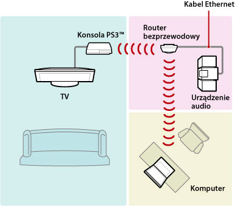
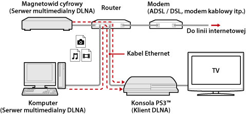
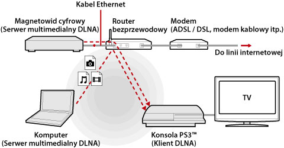
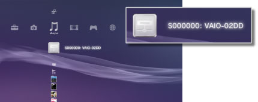
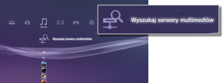

Ustawienia > Ustawienia sieci > Połączenie z serwerem multimediów
Połączenie z serwerem multimediów
Ta opcja umożliwia dostosowywanie ustawień połączenia z urządzeniami obsługującymi standard DLNA.
| Włącz | Umożliwia nawiązywanie połączeń z urządzeniami obsługującymi standard DLNA. |
|---|---|
| Wyłącz | Umożliwia zablokowanie nawiązywania połączeń z urządzeniami obsługującymi standard DLNA. |
Informacje o standardzie DLNA
DLNA (Digital Living Network Alliance) to standard umożliwiający urządzeniom cyfrowym, takim jak komputery osobiste, cyfrowe nagrywarki wideo czy telewizory, łączenie się z siecią i wymianę danych z innymi podłączonymi urządzeniami obsługującymi standard DLNA.
Urządzenia zgodne ze standardem DLNA pełnią dwie różne funkcje. „Serwery” wysyłają pliki multimedialne, np. graficzne, muzyczne czy wideo, natomiast „klienci” odbierają je i odtwarzają. Niektóre urządzenia mogą realizować obie funkcje. Wykorzystując konsolę PS3™ jako klienta, można na niej wyświetlać obrazy oraz odtwarzać pliki muzyczne i wideo umieszczone na zlokalizowanym w sieci urządzeniu, które wyposażono w funkcjonalność serwera multimediów DLNA.

Nawiązywanie połączenia konsoli PS3™ z serwerem multimediów DLNA
Konsolę PS3™ można połączyć z serwerem multimediów DLNA za pomocą łącza przewodowego lub bezprzewodowego.
Przykład łączenia z komputerem osobistym przy użyciu połączenia przewodowego

Przykład łączenia z komputerem osobistym przy użyciu połączenia bezprzewodowego

Konfigurowanie serwera multimediów DLNA
Aby konsola PS3™ mogła współpracować z serwerem multimediów DLNA, należy go odpowiednio skonfigurować. Następujące urządzenia mogą pełnić rolę serwerów multimediów DLNA:
- Urządzenia obsługujące standard DLNA, w tym produkty firm innych niż Sony
- Komputery osobiste (PC) z zainstalowanym programem Windows Media® Player 11
Gdy rolę serwera multimediów DLNA pełni urządzenie audio-wideo
Na urządzeniu włącz funkcję serwera multimediów DLNA, aby umożliwić dostęp do jego zawartości innym urządzeniom. Metoda konfiguracji różni się w zależności od podłączonego urządzenia. Szczegółowe informacje na ten temat znajdują się w instrukcji dołączonej do urządzenia.
Gdy rolę serwera multimediów DLNA pełni komputer osobisty z systemem Microsoft® Windows®
Jako serwera multimediów DLNA można używać komputera osobistego z systemem Microsoft® Windows® przy wykorzystaniu funkcji programu Windows Media® Player 11.
1. |
Uruchom aplikację Windows Media® Player 11. |
|---|---|
2. |
Z menu [Library] wybierz polecenie [Media Sharing]. |
3. |
Zaznacz pole wyboru [Share media]. |
4. |
Na liście urządzeń widocznej poniżej pola wyboru [Share media] zaznacz urządzenia, z którymi chcesz wymieniać dane, a następnie wybierz opcję [Zezwalaj]. |
5. |
Kliknij przycisk [OK]. |
Wskazówki
- Aplikacja Windows Media® Player 11 nie jest instalowana domyślnie na komputerach osobistych z systemem Microsoft® Windows®. Aby zainstalować aplikację Windows Media® Player 11 na swoim komputerze, należy pobrać jej wersję instalacyjną z witryny internetowej firmy Microsoft®.
- Szczegółowe informacje na temat obsługi programu Windows Media® Player 11 można znaleźć w systemie Pomocy programu Windows Media® Player 11.
- Czasami na komputerze osobistym może być zainstalowane dedykowane oprogramowanie serwera multimedialnego DLNA. Szczegółowe informacje na ten temat znajdują się w instrukcji dołączonej do komputera.
Odtwarzanie zawartości serwera multimediów DLNA
Po włączeniu konsoli PS3™ następuje automatyczne wykrycie serwerów multimediów DLNA należących do tej samej sieci. Ikony wykrytych serwerów pojawiają się w kategoriach  (Zdjęcia),
(Zdjęcia),  (Muzyka) i
(Muzyka) i  (Wideo).
(Wideo).
1. |
W kategorii  |
|---|---|
2. |
Wybierz plik, który chcesz odtworzyć. |
Wskazówki
- Konsola PS3™ musi być połączona z siecią. Szczegółowe informacje o ustawieniach sieciowych można znaleźć w temacie
 (Ustawienia) >
(Ustawienia) >  (Ustawienia sieci) > [Ustawienia połączenia internetowego] w niniejszej instrukcji.
(Ustawienia sieci) > [Ustawienia połączenia internetowego] w niniejszej instrukcji. - Jeśli w ustawieniach otoczenia sieciowego metoda przydzielania adresów IP zostanie zmieniona z automatycznego przypisania adresu na przypisywanie przez serwer DHCP, należy użyć funkcji
 (Wyszukaj serwery multimediów) i jeszcze raz przeprowadzić wyszukiwanie serwerów.
(Wyszukaj serwery multimediów) i jeszcze raz przeprowadzić wyszukiwanie serwerów. - Ikona serwera multimediów DLNA jest wyświetlana tylko w przypadku, gdy w oknie funkcji (Ustawienia) > (Ustawienia sieci) zostanie zaznaczona opcja [Połączenie z serwerem multimediów].
- Wyświetlane nazwy folderów różnią się w zależności od konkretnego serwera multimediów DLNA.
- W przypadku niektórych serwerów multimediów DLNA mogą wystąpić problemy z odtwarzaniem niektórych plików lub wykonywaniem pewnych operacji w trakcie odtwarzania.
- Nie można odtwarzać zawartości chronionej prawami autorskimi.
- Do nazw plików danych znajdujących się na serwerach, które nie obsługują standardu DLNA może być dodawana gwiazdka. Czasami takich plików nie można odtwarzać na konsoli PS3™. Ponadto, nawet jeśli można je odtwarzać na konsoli PS3™, odtwarzanie może być niemożliwe na innych urządzeniach.
Ręczne wyszukiwanie serwerów multimediów DLNA
Konsola pozwala na ręczne zainicjowanie wyszukiwania serwerów multimediów DLNA zlokalizowanych w tej samej sieci. Funkcji tej należy użyć w przypadku, gdy po włączeniu konsoli PS3™ nie zostaną automatycznie wykryte żadne serwery multimediów DLNA.
W kategorii (Zdjęcia), (Muzyka) lub (Wideo) naciśnij przycisk (Wyszukaj serwery multimediów). Po wyświetleniu wyników wyszukiwania i powrocie do menu XMB™ wyświetlona zostanie lista serwerów multimediów DLNA, z którymi można się połączyć.

Wskazówka
Przycisk (Wyszukaj serwery multimediów) jest wyświetlany tylko w przypadku, gdy w oknie funkcji (Ustawienia) > (Ustawienia sieci) zostanie zaznaczona opcja [Połączenie z serwerem multimediów].